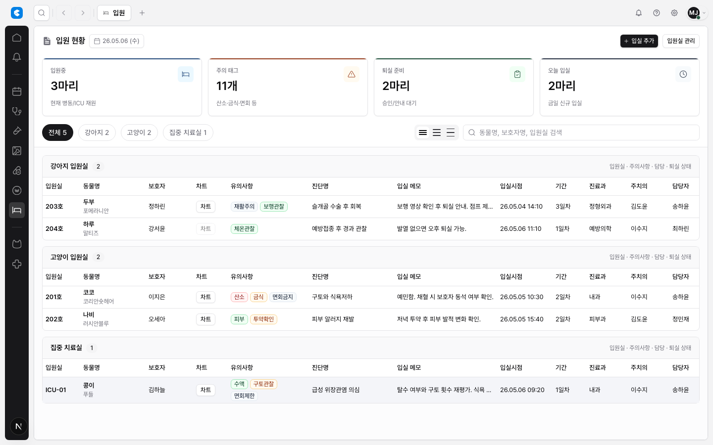
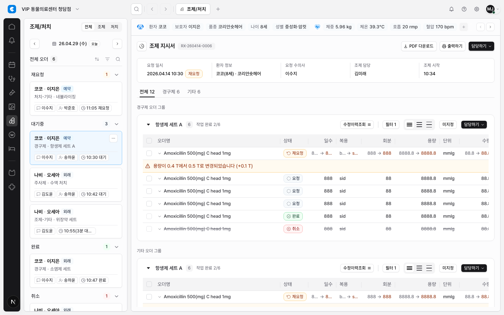

Table Cell Text Wrapping & One-Line Default Research
CLAiR 테이블 셀 텍스트는 기본 1행이 맞다. 행 높이가 계속 달라지면 EMR 작업자가 여러 행을 빠르게 비교하기 어렵고, density 설정의 의미도 흐려진다. 다만 진단명, 입실 메모, 긴 Order명, 복약지도처럼 의미 손실이 큰 필드는 2행 preview를 허용하고, 전체 내용은 tooltip, popover, side detail, drawer, editor에서 보완한다.
현재 문제
- 테이블마다 1행, 2행, 줄바꿈, 말줄임 기준이 다르면 스캔성이 떨어진다.
- 긴 텍스트를 모두 row 안에서 펼치면 compact/standard/comfortable density가 예측 불가능해진다.
- 긴 임상 텍스트를 무조건 자르면 정보 손실이 생긴다.


외부 레퍼런스 요약
| 레퍼런스 | 관찰 | CLAiR 적용 |
|---|---|---|
| MUI X row height, cells | Dynamic row height는 content size를 따르며 density를 무시할 수 있고, long text는 popup으로 보여주는 recipe가 있다. | 기본 row는 고정 density를 유지하고 긴 텍스트는 on-demand full view로 보완한다. |
| AG Grid row height / text wrapping | wrapText가 없으면 single-line clipped text가 기본이다. autoHeight는 필요한 컬럼만 제한적으로 쓰라고 안내한다. | auto height를 전체 테이블 기본값으로 쓰지 않는다. 2행 preview 대상 컬럼을 제한한다. |
| Ant Design Table | Column의 ellipsis는 명시적 옵션이며 table layout에도 영향을 준다. |
말줄임은 column policy로 선언한다. 화면별 CSS 임의 처리로 흩어지지 않게 한다. |
| TanStack Table | Headless table은 column width state만 제공하고 실제 cell rendering/styling은 제품이 소유한다. | CLAiR가 EmrTableCellText 같은 primitive로 line clamp와 tooltip 정책을 소유한다. |

권장 Text Policy
| Mode | 대상 | 표시 방식 |
|---|---|---|
one-line |
ID, 날짜, 금액, 담당자, 상태, 품종, 전화번호, 보호자명, 짧은 이름 | 1행 고정, overflow는 ellipsis. 필요 시 title/tooltip. |
two-line-if-long |
Order명, 진단명, 입실 메모, 복약지도, 유의사항, 청구서명 | 내용이 한 줄을 넘을 때만 2행 clamp. 행 높이는 density별 상한을 둔다. |
badge-wrap |
상태 badge 묶음, 유의사항 badge 묶음 | standard/comfortable에서 최대 2행. compact에서는 우선 1행 + overflow/scroll 또는 더보기. |
full-on-demand |
임상적으로 잘리면 안 되는 긴 문장 | table에는 preview만 두고 tooltip/popover/drawer/side detail에서 전체를 읽게 한다. |
always-multiline |
종합소견, 판독의견, comment editor, row detail panel | dense table body 안에서는 기본 금지. table 밖 detail/editor surface에서 사용. |
화면별 적용 제안
- 진료/차트: 오더명/청구서명은
two-line-if-long, 수량/단가/수의사/status는one-line. - 임상병리: 항목명/담당자/판정은
one-line. 종합소견은 table body가 아니라 별도 textarea/editor. - 영상검사: 검사명/분류/요청일시는
one-line. 판독의견은 detail/editor 영역에서 multiline. - 조제/처치: 오더명과 변경 알림은
two-line-if-long. 단위/수량/제형/담당/작업여부는one-line. - 수납: 청구 항목명은
two-line-if-long가능. 금액/수량/할인은one-line고정. - 입원: 진단명/입실 메모는
two-line-if-long. 유의사항 badge는badge-wrap. - 고객관리: 대부분
one-line. 상태 badge 묶음만badge-wrap후보. - 병원관리: 표준/원내/청구서명은
two-line-if-long. 유형/사용여부/판매금액/대상은one-line.
Density와 충돌 방지
| Density | 기본 | 2행 허용 |
|---|---|---|
compact |
1행 | 고가치 임상 preview 컬럼 1개 정도만. badge wrap은 가급적 피한다. |
standard |
1행 | 테이블당 1-2개 주요 텍스트 컬럼 허용. |
comfortable |
1행 또는 2행 preview | review-heavy table에서 2행 preview 허용. 그래도 uncontrolled auto-height는 금지. |
공유 API 제안
type EmrCellTextMode =
| "one-line"
| "two-line-if-long"
| "badge-wrap"
| "full-on-demand"
| "always-multiline";
type EmrCellTextOverflow = "ellipsis" | "tooltip" | "popover" | "side-detail";EmrTableCellText: line clamp, ellipsis, title/tooltip, fullText handoff를 소유한다.EmrTableBadgeStack: badge 묶음의 1행/2행 wrapping 기준을 소유한다.EmrLongTextPreview: table preview + full-on-demand action을 소유한다.
후속 구현 이슈 범위
- 전체 table column definition에 text mode를 선언한다.
- 공유 cell text primitive를 만든다.
- 입원과 조제/처치에서 긴 텍스트 후보를 먼저 적용하고 QA한다.
- 고객관리/병원관리/수납/진료/검사 화면으로 확장한다.
- tooltip/popover/full detail은 실제 필요 컬럼부터 단계 도입한다.
검증 권장
- compact/standard/comfortable에서 row height가 예측 가능한지 확인한다.
- 1440/1280/1024 viewport에서 ellipsis와 2-line clamp가 겹치지 않는지 캡처한다.
- 중요 clinical text가 table preview에서 잘리더라도 full-on-demand 경로가 있는지 확인한다.
- 문서 폭 overflow와 table container overflow가 분리되어 유지되는지 확인한다.
상태
PASS Research report created.
PASS Source design-system guide updated: docs/design/system/table-density-and-grid-ergonomics.md.
구현은 포함하지 않았다. 이 보고서는 다음 shared cell text implementation 이슈의 기준으로 사용한다.